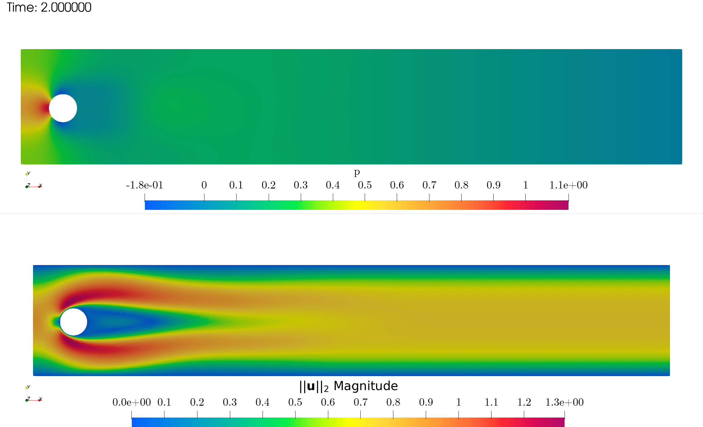
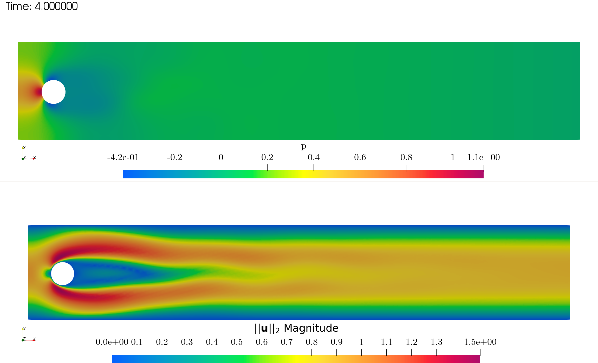
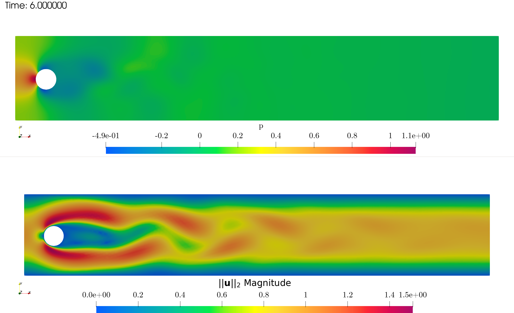
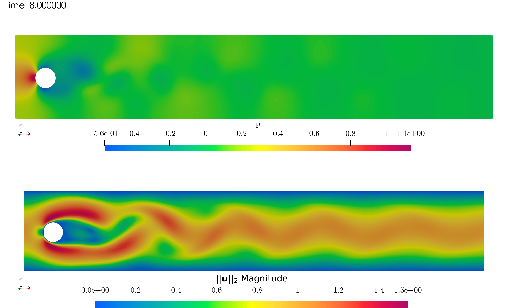
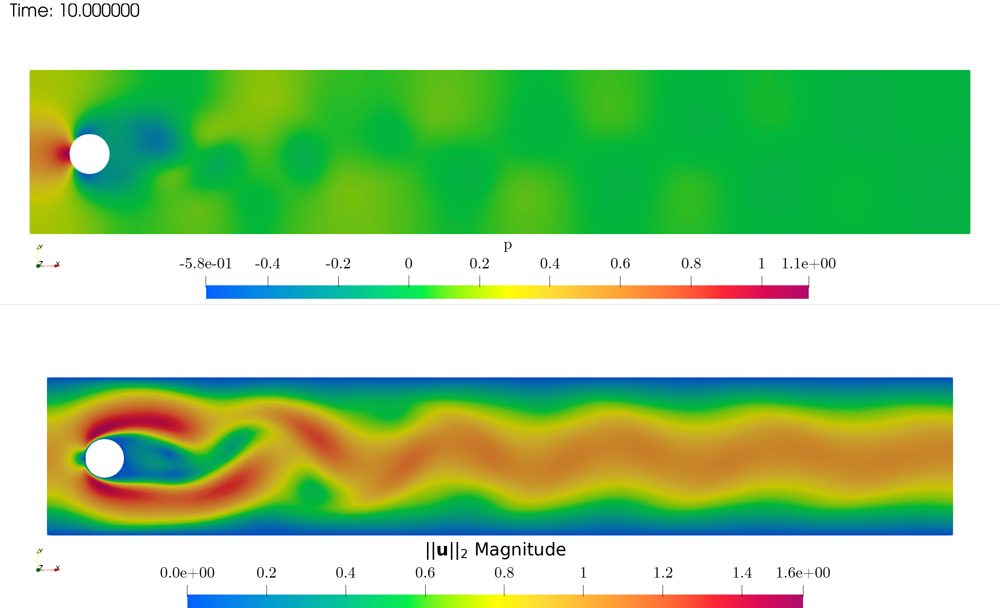

Laminar Flow over cylinder (2D)
Contents
Laminar Flow over cylinder (2D)#
This notebook implements an unsteady incompressible Navier-Stokes solver for the flow over a cylinder (the problem is based on the tutorial of FEniCSx, that is the DFG 2D benchmark).
The problem is strong form reads:
in which \(\nu = 1e-4\), \(\mathbf{g} = \mathbf{0}\) and \(U(t) = 1.5 \sin\left(\frac{\pi t}{8}\right)\) or \(U(t) = \displaystyle\frac{1}{1+e^{-t}}\).
import tqdm
import numpy as np
# Mesh generation
import dolfinx
from mpi4py import MPI
from dolfinx import mesh
from dolfinx.io import gmshio, XDMFFile
gdim = 2
domain, ct, ft = gmshio.read_from_msh("flowCylinder.msh", MPI.COMM_WORLD, gdim = gdim)
fdim = gdim - 1
inl_marker = 10
wall_marker = 20
sym_marker = 30
out_marker = 40
# Define the functional space
from dolfinx import fem
from dolfinx.fem import Function, FunctionSpace, dirichletbc, locate_dofs_topological, form
import ufl
from ufl import grad, div, nabla_grad, dx, inner, dot, ds
from petsc4py import PETSc
P2 = ufl.VectorElement("Lagrange", domain.ufl_cell(), 2)
V = FunctionSpace(domain, P2)
P1 = ufl.FiniteElement("Lagrange", domain.ufl_cell(), 1)
Q = FunctionSpace(domain, P1)
u = ufl.TrialFunction(V)
v = ufl.TestFunction(V)
uOld = Function(V)
uTilde = Function(V)
u_sol = Function(V)
p = ufl.TrialFunction(Q)
q = ufl.TestFunction(Q)
pOld = Function(Q)
deltaP = Function(Q)
p_sol = Function(Q)
# U = lambda t: 1.5 * np.sin(np.pi * t / 8.)
U = lambda t: 1. / (1+np.exp(-t))
nu = fem.Constant(domain, PETSc.ScalarType(1e-3))
T = 10
dt = 2e-3
t = 0
# Define the BC
## Inlet: parabolic velocity
class InletVelocity():
def __init__(self, U, t):
self.U = U
self.t = t
def __call__(self, x):
values = np.zeros((gdim, x.shape[1]),dtype=PETSc.ScalarType)
values[0] = 4 * self.U(self.t) * (x[1]+0.2) * (0.21 - x[1]) / 0.41**2
return values
inlet_velocity = InletVelocity(U, t)
in_velocity = Function(V)
in_velocity.interpolate(inlet_velocity)
bc_in = dirichletbc(in_velocity, locate_dofs_topological(V, fdim, ft.find(inl_marker)))
## Walls: no slip
u_nonslip = np.array((0,) * domain.geometry.dim, dtype=PETSc.ScalarType)
bc_w = dirichletbc(u_nonslip, locate_dofs_topological(V, fdim, ft.find(wall_marker)), V)
## Symm: free slip
bc_sym = dirichletbc(u_nonslip, locate_dofs_topological(V, fdim, ft.find(sym_marker)), V)
bc_u = [bc_w, bc_sym, bc_in]
## Out
bc_p = [dirichletbc(PETSc.ScalarType(0), locate_dofs_topological(Q, fdim, ft.find(out_marker)), Q)]
Predictor: NS momentum#
We can define the variational formulations for the time advancement loop. Let’s start with the projection step
whose weak formulation reads
NS_a = form( (inner(u,v) +
dt * inner(dot(uOld, nabla_grad(u)), v) +
dt * inner(nu * grad(u), grad(v))) * dx )
NS_L = form( (inner(uOld - dt * grad(pOld), v)) * dx)
NS_A = fem.petsc.create_matrix(NS_a)
NS_b = fem.petsc.create_vector(NS_L)
solver1 = PETSc.KSP().create(domain.comm)
solver1.setOperators(NS_A)
solver1.setType(PETSc.KSP.Type.BCGS)
solver1.getPC().setType(PETSc.PC.Type.JACOBI)
Pressure projection#
The projection step consists in a Poisson problem, i.e.
whose weak formulation reads
Poisson_a = form(inner(grad(p), grad(q)) * dx)
Poisson_L = form(- 1. / dt * inner(div(uTilde), q) * dx)
Poisson_A = fem.petsc.assemble_matrix(Poisson_a, bcs = bc_p)
Poisson_A.assemble()
Poisson_b = fem.petsc.create_vector(Poisson_L)
solver2 = PETSc.KSP().create(domain.comm)
solver2.setOperators(Poisson_A)
solver2.setType(PETSc.KSP.Type.CG)
solver2.getPC().setType(PETSc.PC.Type.SOR)
Correction#
Then, a third auxiliary variational problem is defined to update the velocity
update_a = form(inner(u, v) * dx)
update_L = form(inner(uTilde - dt * grad(deltaP), v) * dx)
update_A = fem.petsc.assemble_matrix(update_a)
update_A.assemble()
update_b = fem.petsc.create_vector(update_L)
solver3 = PETSc.KSP().create(domain.comm)
solver3.setOperators(update_A)
solver3.setType(PETSc.KSP.Type.CG)
solver3.getPC().setType(PETSc.PC.Type.SOR)
The pressure is also updated as
Time loop#
Finally, the time loop can be implemented.
u_xdmf = XDMFFile(domain.comm, "U.xdmf", "w")
u_xdmf.write_mesh(domain)
u_sol.name = "U"
u_xdmf.write_function(u_sol, t)
p_xdmf = XDMFFile(domain.comm, "p.xdmf", "w")
p_xdmf.write_mesh(domain)
p_sol.name = "p"
p_xdmf.write_function(p_sol, t)
kk = 1
num_steps = int(T/dt)
progress = tqdm.tqdm(desc="Solving PDE", total=num_steps)
for ii in range(num_steps):
progress.update(1)
t += dt
inlet_velocity.t = t
in_velocity.interpolate(inlet_velocity)
# Predictor
NS_A.zeroEntries()
fem.petsc.assemble_matrix(NS_A, NS_a, bcs = bc_u)
NS_A.assemble()
with NS_b.localForm() as loc:
loc.set(0)
fem.petsc.assemble_vector(NS_b, NS_L)
fem.petsc.apply_lifting(NS_b, [NS_a], [bc_u])
NS_b.ghostUpdate(addv=PETSc.InsertMode.ADD_VALUES, mode=PETSc.ScatterMode.REVERSE)
fem.petsc.set_bc(NS_b, bc_u)
solver1.solve(NS_b, uTilde.vector)
uTilde.x.scatter_forward()
# Projection
with Poisson_b.localForm() as loc:
loc.set(0)
fem.petsc.assemble_vector(Poisson_b, Poisson_L)
fem.petsc.apply_lifting(Poisson_b, [Poisson_a], [bc_p])
Poisson_b.ghostUpdate(addv=PETSc.InsertMode.ADD_VALUES, mode=PETSc.ScatterMode.REVERSE)
fem.petsc.set_bc(Poisson_b, bc_p)
solver2.solve(Poisson_b, deltaP.vector)
deltaP.x.scatter_forward()
# Correction
with update_b.localForm() as loc:
loc.set(0)
fem.petsc.assemble_vector(update_b, update_L)
update_b.ghostUpdate(addv=PETSc.InsertMode.ADD_VALUES, mode=PETSc.ScatterMode.REVERSE)
solver3.solve(update_b, u_sol.vector)
u_sol.x.scatter_forward()
p_sol.vector.axpy(1, deltaP.vector)
p_sol.x.scatter_forward()
# Save solution
if (np.isclose(t, 10 * kk * dt)):
u_xdmf.write_function(u_sol, t)
p_xdmf.write_function(p_sol, t)
kk += 1
# Update old
with u_sol.vector.localForm() as loc_, uOld.vector.localForm() as loc_n:
loc_.copy(loc_n)
with p_sol.vector.localForm() as loc_, pOld.vector.localForm() as loc_n:
loc_.copy(loc_n)
u_xdmf.close()
p_xdmf.close()




